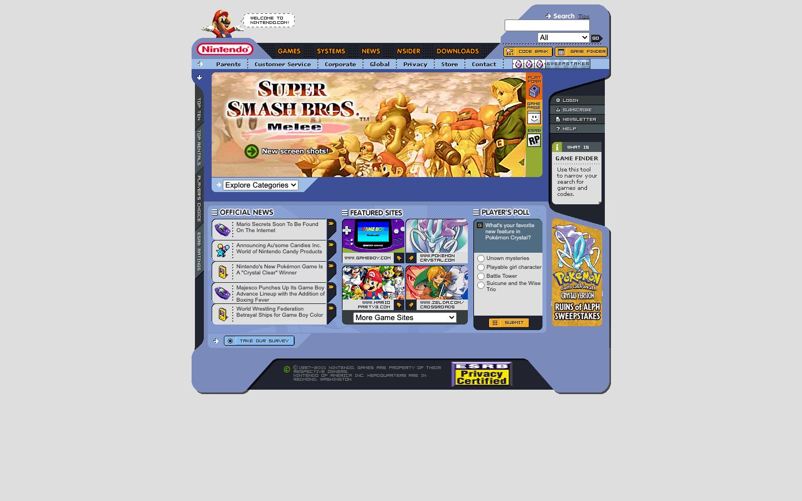

References / Website / 281
Nintendo website, 2001
Nintendo’s home page of August 2001, framed as a periwinkle console with rounded corners, dark side rails, and pixel-font labels.
- Source
- www.nintendo.com (archived copy)
- Creator
- Nintendo of America
- Made
- 2001 (capture date, 22 August 2001)
- Style
- Y2K aesthetic (agent-proposed, not yet reviewed by a person)
- Moods
- Playful, techno-optimistic, busy
- Evidence
- Captured from the Internet Archive with
tools/capture.mjs(headless Chrome, 1440 × 900) on 28 September 2026 and inspected. Nothing covers the page. All images loaded. - Reviewed
- Rights
- Third-party work, stored with credit for commentary. License: unverified. Rights policy
Observed
- The whole page sits in one periwinkle frame with rounded outer corners and angled cut-outs, like the housing of a handheld device, on a light gray ground.
- Dark charcoal rails with dotted texture run across the top and down both sides and hold the navigation.
- Main navigation (“GAMES”, “SYSTEMS”, “NEWS”, “NSIDER”, “DOWNLOADS”) is in orange pixel-style capitals; side labels such as “TOP TEN” and “PLAYER’S CHOICE” run vertically.
- Small controls are capsule-shaped orange and gray buttons with pixel labels, such as “CODE BANK”, “GAME FINDER”, and “SUBMIT”.
- Content panels have rounded ends and stacked list rows, each with a small icon and an orange arrow tab.
- Game art and a purple Game Boy Advance fill the panels; Mario stands at top left with a pixel speech bubble.
Why it belongs
This is the style’s “interface as device” layout on the web: the page is drawn as a piece of hardware, with rails, ports, and buttons.
Measured: no CSS gradients, shadows, or radii, because the frame is sliced images; the pixel palette has three hues.
Borrow
Frame a whole page as a device housing: one rounded outer shape, dark rails for navigation, and capsule buttons.
Set small labels in a pixel font and run side labels vertically.
Measured
Machine-extracted by tools/extract-traits.js on . Full measurement.
- Type families
- arial (100%)
- Median radius
- 0 px
- Mean chroma
- 0.01
- Palette
- #dedede 74%
- #333333 20%
- #7a8aba 2%
- #ffffff 2%
- #3d4f97 2%
- #4f6c82 1%

